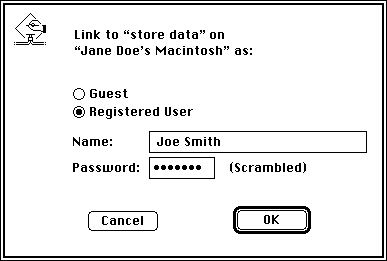
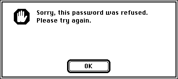
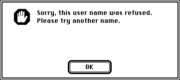

Preparing for a Session
To communicate, you can open a port for your application and make it available to receive session requests, to initiate sessions, or both. Applications that are able to receive session requests can choose to accept or reject incoming session requests.Before an application can accept and establish a session with another application, the PPC Toolbox authenticates the initiating user (unless guest access is enabled or the applications are located on the same computer). Once a session begins, the two applications can exchange data with each other.
Initiating a PPC Session
Once you have established the name and the location of the port that you want to communicate with, you can initiate a session. You can use either theStartSecureSessionfunction or thePPCStartfunction to initiate a session. TheStartSecureSessionfunction displays several dialog boxes to identify each user who requests a session. You may prefer to use thePPCStartfunction for low-level code such as that used for drivers, which typically do not provide a user interface. You may also prefer to usePPCStartwhen the application you are initiating a session with does not require authentication. TheIPCListPortsandPPCBrowserfunctions return information about whether a particular port requires authentication.
The
- Note
- Do not call the
StartSecureSessionfunction from an application that is running in the background, because the function displays several dialog boxes on the user's screen.
StartSecureSessionfunction provides authentication services to identify each user who requests a session. This function combines the processes of prompting for user name and password and initiating a session into one synchronous procedure call. If authentication fails, the PPC Toolbox rejects the incoming session request.
err := StartSecureSession (pb, userName, useDefault, allowGuest, guestSelected, prompt);Set theuseDefaultparameter toTRUEif you want theStartSecureSessionfunction to use the default user identity (described later in this section). If the default user identity cannot be authenticated, theStartSecureSessionfunction displays a dialog box to allow a user to log on. Figure 11-14 shows the user identity dialog box.Figure 11-14 The user identity dialog box

The
promptparameter of theStartSecureSessionfunction allows you to specify a line of text that the dialog box can display. TheallowGuestparameter specifies whether to enable the Guest radio button. If a port requires authentication, you should set this parameter toFALSE.The
userNameparameter specifies the name of the user who is attempting to initiate a session. If the user name is not specified, the user identity dialog box appears on the user's screen with the owner name provided from the Sharing Setup control panel.If the user enters an invalid password, the
StartSecureSessionfunction displays the dialog box shown in Figure 11-15.Figure 11-15 The incorrect password dialog box

After the user clicks OK, the user identity dialog box reappears in the foreground so that the user can enter the password again.
If the user's name is invalid, the
StartSecureSessionfunction displays the dialog box shown in Figure 11-16.Figure 11-16 The invalid user name dialog box

After the user clicks OK, the user identity dialog box reappears so that the user can enter a new user name.
The
StartSecureSessionfunction remains in this loop until a secure session is initiated or the user clicks Cancel in the user identity dialog box. If a secure session is initiated,StartSecureSessionreturns the user reference number in the corresponding field in thePPCStartparameter block. The user reference number represents the user name and password. A user reference number of 0 indicates that a session has been initiated with guest access. See "Setting Up Authenticated Sessions" beginning on page 11-6 for more information.Before your application quits, you need to invalidate all user reference numbers obtained with the
StartSecureSessionfunction except for the default user reference number and the guest reference number (0). See "Invalidating Users" on page 11-44 for detailed information.Listing 11-6 illustrates how to use the
StartSecureSessionfunction to establish an authenticated session. This listing shows only one session, although your application may conduct multiple sessions at one time.Listing 11-6 Using the
StartSecureSessionfunction to establish a session
FUNCTION MyStartSecureSession(thePortInfoPtr: PortInfoPtr; theLocationNamePtr: LocationNamePtr; thePortRefNum: PPCPortRefNum; VAR theSessRefNum: PPCSessRefNum; VAR theUserRefNum: LongInt; VAR theRejectInfo: LongInt; VAR userName: Str32; VAR guestSelected: Boolean): OSErr; VAR thePPCStartPBRec: PPCStartPBRec; useDefault: Boolean; allowGuest: Boolean; err: OSErr; BEGIN WITH thePPCStartPBRec DO BEGIN ioCompletion := NIL; portRefNum := thePortRefNum; {from the PPCOpen function} serviceType := ppcServiceRealTime; resFlag := 0; portName := @thePortInfoPtr^.name; {from the PPCBrowser} locationName := theLocationNamePtr; {from the PPCBrowser} userData := 0; {application-specific data that the } { PPCInform function sees} END; {try to connect with default user identity} useDefault := TRUE; {highlight the Guest button appropriately} allowGuest := NOT thePortInfoPtr^.authRequired; err := StartSecureSession(@thePPCStartPBRec, userName, useDefault, allowGuest, guestSelected, stringPtr(NIL)^); IF err = noErr THEN BEGIN theSessRefNum := thePPCStartPBRec.sessRefNum; theUserRefNum := thePPCStartPBRec.userRefNum; END ELSE IF err = userRejectErr THEN {return rejectInfo from the PPCReject function} theRejectInfo := thePPCStartPBRec.rejectInfo; MyStartSecureSession := err; END;For low-level code such as that used for drivers (which typically do not provide a user interface), you can use thePPCStartfunction instead of theStartSecureSessionfunction to initiate a session. You can also use theIPCListPortsfunction (instead of displaying the program linking dialog box) to obtain a list of ports.If the
authRequiredfield of the port information record containsFALSE, the port allows guest access. If theauthRequiredfield of the port information record containsTRUE, use thePPCStartfunction and the user reference number obtained previously from theStartSecureSessionfunction to reestablish an authenticated session.You can also attempt to log on as the default user using the
GetDefaultUserfunction to obtain the default user reference number and the default user name. The default user name is established after the owner starts up the computer.
err := GetDefaultUser (userRef, userName);TheuserRefparameter is a reference number that represents the user name and password of the default user. TheuserNameparameter contains the owner name that is specified in the Sharing Setup control panel.The
GetDefaultUserfunction returns an error when the default user identity does not exist (no name is specified in the Sharing Setup control panel) or the user is not currently logged on.Listing 11-7 illustrates how you use the
PPCStartfunction to initiate a session. ThePPCStartfunction uses the port information record and the location name record to attempt to open a session with the selected PPC port.Listing 11-7 Initiating a session using the
PPCStartfunction
FUNCTION MyPPCStart(thePortInfoPtr: PortInfoPtr; theLocationNamePtr: LocationNamePtr; thePortRefNum: PPCPortRefNum; VAR theSessRefNum: PPCSessRefNum; VAR theUserRefNum: LongInt; VAR theRejectInfo: LongInt): OSErr; VAR thePPCStartPBRec: PPCStartPBRec; userName: Str32; err: OSErr; BEGIN WITH thePPCStartPBRec DO BEGIN ioCompletion := NIL; portRefNum := thePortRefNum; {from the PPCOpen function} serviceType := ppcServiceRealTime; resFlag := 0; portName := @thePortInfoPtr^.name; {destination port} locationName := theLocationNamePtr; {destination location} userData := 0; {application-specific data for PPCInform} END; err := GetDefaultUser(thePPCStartPBRec.userRefNum, userName); IF err <> noErr THEN thePPCStartPBRec.userRefNum := 0; IF thePortInfoPtr^.authRequired AND (thePPCStartPBRec.userRefNum = 0) THEN {port selected doesn't allow guests & you don't have a } { default user ref number so you can't log on to this port} err := authFailErr ELSE {attempt to log on} err := PPCStart(@thePPCStartPBRec, FALSE); IF err = noErr THEN BEGIN theSessRefNum := thePPCStartPBRec.sessRefNum; theUserRefNum := thePPCStartPBRec.userRefNum; END ELSE IF err = userRejectErr THEN {return rejectInfo from the PPCReject function} theRejectInfo := thePPCStartPBRec.rejectInfo; MyPPCStart := err; END;The port to which you wish to connect must have an outstandingPPCInformfunction to successfully start a session. You cannot initiate a session with a port that is not able to receive session requests.If the port is open, has an outstanding
PPCInformfunction posted, and accepts your session request, thePPCStartfunction returns anoErrresult code and a valid session reference number. This session reference number is used to identify the session during the exchange of data.Receiving Session Requests
Your application can open as many ports as it requires as long as each port name is unique within a particular computer. A single port can support a number of communication sessions. To allow a port to receive session requests, use thePPCInformfunction. (Note that you must open a port to obtain a port reference number before calling thePPCInformfunction.) A port may have any number of outstandingPPCInformrequests.Listing 11-8 illustrates how you use the
PPCInformfunction to allow a port to receive session requests. In this listing, the parameterthePPCParamBlockPtrpoints to a PPC parameter block record allocated by the application. TheportRefNum,autoAccept,portName,locationName,userName, andioCompletionparameters of the PPC parameter block record must be supplied. If you want to automatically accept all incoming session requests, you can set theautoAcceptfield in thePPCInformparameter block.Listing 11-8 Using the
PPCInformfunction to enable a port to receive sessions
FUNCTION MyPPCInform(thePPCParamBlockPtr: PPCParamBlockPtr; thePPCPortPtr: PPCPortPtr; theLocationNamePtr: LocationNamePtr; theUserNamePtr: stringPtr; thePortRefNum: PPCPortRefNum): OSErr; BEGIN WITH thePPCParamBlockPtr^.informParam DO BEGIN ioCompletion := @MyInformCompProc; portRefNum := thePortRefNum; {from the PPCOpen function} autoAccept := FALSE; {the completion routine } { handles accepting or } { rejecting requests} portName := thePPCPortPtr; locationName := theLocationNamePtr; userName := theUserNamePtr; END; MyPPCInform := PPCInform(PPCInformPBPtr(thePPCParamBlockPtr), TRUE); {asynchronous} END;A PPC parameter block record is used instead of aPPCInformparameter block record so that the same parameter block can be reused to make other PPC Toolbox calls from thePPCInformcompletion routine. The parameter block and the records it points to cannot be deallocated until all calls that use the parameter block and records have completed.You should make the call to
PPCInformasynchronously. For each function that you use asynchronously, you should provide a completion routine. The completion routine gets called at interrupt time when thePPCInformfunction completes.Listing 11-9 illustrates a completion routine for a
PPCInformfunction. You can use the data passed into yourPPCInformcompletion routine (user name, user data, port name, and location name) to determine whether to accept or reject the session request.Listing 11-9 Completion routine for a
PPCInformfunction
PROCEDURE MyInformCompProc(pb: PPCParamBlockPtr); BEGIN IF pb^.informParam.ioResult = noErr THEN BEGIN {decide if this session should be accepted or rejected by } { looking at data supplied by the session requester} IF pb^.informParam.userData <> -1 THEN DoPPCAccept(pb) ELSE DoPPCReject(pb); END ELSE {use a global to tell the application that } { PPCParamBlockRec and the records it points to } { can be deallocated} gPBInUse := FALSE; END;When thePPCInformfunction completes, theMyInformCompProcprocedure determines whether to accept or reject the incoming session request. It does this by callingPPCAcceptorPPCReject, as described in the next section.Accepting or Rejecting Session Requests
Use thePPCAcceptfunction or thePPCRejectfunction to accept or reject an incoming session request.
Listing 11-10 illustrates how you use the
- WARNING
- If the
PPCInformfunction (with theautoAcceptparameter set toFALSE) returns anoErrresult code, you must call either thePPCAcceptfunction or thePPCRejectfunction. The computer trying to initiate a session (using theStartSecureSessionfunction or thePPCStartfunction) waits (hangs) until the session attempt is either accepted or rejected, or until an error occurs.
PPCAcceptfunction to accept a session request. This listing reuses the parameter block used in thePPCInformfunction, so thesessRefNumfield already contains the session reference number needed by thePPCAcceptfunction.Listing 11-10 Accepting a session request using the
PPCAcceptfunction
PROCEDURE DoPPCAccept(pb: PPCParamBlockPtr); VAR err: OSErr; BEGIN {accept the session} pb^.acceptParam.ioCompletion := @MyAcceptCompProc; {the sessRefNum field is set by the PPCInform function} err := PPCAccept(@pb^.acceptParam, TRUE); {asynchronous} END;For each function that you use asynchronously, you should provide a completion routine. Listing 11-11 illustrates a completion routine for aPPCAcceptfunction. This procedure gets called at interrupt time when thePPCAcceptfunction completes. If there are no errors, it sets the global variablegSessionOpentoTRUE. The global variablegPBInUseis set toFALSEto inform the application that the parameter block and the records it points to are no longer in use.You can use the session reference number in subsequent
PPCWrite,PPCRead, andPPCEndfunctions once a session is accepted.Listing 11-11 Completion routine for a
PPCAcceptfunction
PROCEDURE MyAcceptCompProc(pb: PPCParamBlockPtr); BEGIN IF pb^.acceptParam.ioResult = noErr THEN {accept completed so the session is completely open} gSessionOpen := TRUE; {use a global to tell the application that PPCParamBlockRec } { and the records it points to can be deallocated} gPBInUse := FALSE; END;Use thePPCRejectfunction to reject an incoming session request. Listing 11-12 illustrates how you use thePPCRejectfunction to reject a session request.This listing reuses the parameter block used in the
PPCInformfunction, so thesessRefNumfield already contains the session reference number needed by thePPCRejectfunction.Listing 11-12 Rejecting a session request using the
PPCRejectfunction
PROCEDURE DoPPCReject(pb: PPCParamBlockPtr); VAR err: OSErr; BEGIN {reject the session} WITH pb^.rejectParam DO BEGIN ioCompletion := @MyRejectCompProc; {the sessRefNum field is set by the PPCInform function} rejectInfo := -1; END; err := PPCReject(@pb^.rejectParam, TRUE); {asynchronous} END;Listing 11-13 illustrates a completion routine for aPPCRejectfunction. This procedure is called at interrupt time when thePPCRejectfunction completes. In this example, the global variablegPBInUseis set toFALSEto inform the application that the parameter block and the records it points to are no longer in use.Listing 11-13 Completion routine for a
PPCRejectfunction
PROCEDURE MyRejectCompProc(pb: PPCParamBlockPtr); BEGIN {use a global to tell the application that PPCParamBlockRec } { and the records it points to can be deallocated} gPBInUse := FALSE; END;